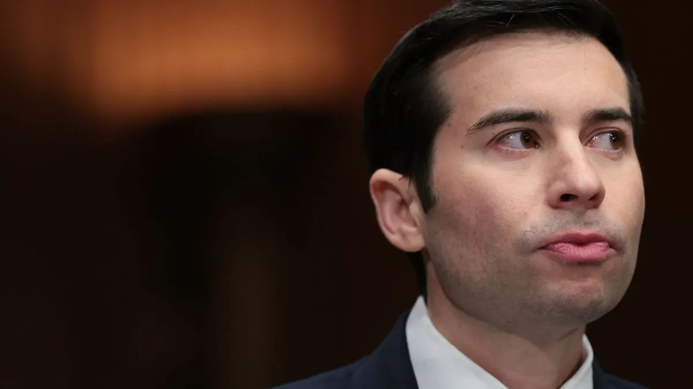

Sharma Electric & HVAC — Legal News Briefing — Friday, November 20, 2026 (ET)
Summary — read this first: the Senate passes the permitting bill, DOL rewrites the contractor test, and the HazCom deadline lands today
Honest assessment: The core window (Thursday, Nov 19, 5:00 a.m. ET – Friday, Nov 20, 5:00 a.m. ET) was a full, genuinely newsworthy day — not thin. The biggest story is the one yesterday's edition left pending: on Thursday evening, Nov 19, the Senate passed the Bipartisan American Affordability and Jobs Act (BAAJA) 62–33 (item 1.1), completing the vote sequence that cleared its last 60-vote hurdle on Wednesday. The bill now goes to the House; it is not law yet. The day's most Sharma-actionable item is quieter but direct: the Department of Labor announced a final independent-contractor rule on Thursday, Nov 19, scrapping the 2024 Biden-era test and restoring a control-and-profit/loss "economic reality" test (item 3.1) — the federal standard that governs how Sharma's own subcontractor and helper arrangements are judged under wage law. The same day, GSA and DHS announced an E-Verify enforcement sweep: 1,579 federal contractors holding over $53 billion in contracts must prove E-Verify compliance by December 16 (item 3.2). Florida's Thursday headline is the completion of a story this briefing has tracked: the U.S. Supreme Court denied Thomas Overton's stay on Thursday afternoon and Florida executed him at 6:19 p.m. — the state's record 20th execution of 2026 (item 2.1). One deadline lands TODAY, Friday, Nov 20: the OSHA HazCom substances deadline — updated workplace labels, written program, and training for newly identified hazards, with no grace period in the rule (§3.3). The IRS FIRE e-filing system also retired on schedule Thursday at 3:00 p.m. ET (§3.3). A "Supreme Court eviscerates the Voting Rights Act" story circulating as Nov 19 news is again the April 29, 2026 Callais decision — quarantined under Recycled, not counted.
Biggest story overall: Senate passage of BAAJA, 62–33, on Thursday, Nov 19, 2026 (Section 1.1) — an update completing yesterday's lead item; the passage vote itself is new. For Sharma's own operations, the most actionable items are the DOL independent-contractor final rule (§3.1), the E-Verify sweep (§3.2), and today's HazCom deadline (§3.3).
Top of the briefing
- Permitting bill PASSES the Senate (Thu Nov 19): BAAJA passes 62–33 on Thursday evening and heads to the House — the passage vote pending at yesterday's cutoff is now done; the bill is not yet law → §1.1
- DOL finalizes the independent-contractor rule (Thu Nov 19): the 2024 test is scrapped; classification turns on two core factors — control over the work and opportunity for profit or loss — effective 60 days after Federal Register publication → §3.1
- E-Verify sweep (Thu Nov 19): GSA/DHS tell 1,579 federal contractors (over $53B in contracts) to prove E-Verify compliance by Dec 16 or face referral, cancellation, suspension, or debarment → §3.2
- Overton executed (Thu Nov 19): SCOTUS denies the stay (26A686) without comment Thursday afternoon; Florida carries out its record 20th execution of 2026 at 6:19 p.m. → §2.1
- Florida federal judge narrows — but lets proceed — Trump's $15B defamation case (Thu Nov 19): Judge Merryday (M.D. Fla., Tampa) dismisses 2 of 6 counts and 27 statements; 4 counts over 7 statements alleging tax and financial crimes survive → §1.2
- Deadlines: OSHA HazCom substances deadline is TODAY, Fri Nov 20 (§3.3); IRS FIRE retired Thu Nov 19 at 3:00 p.m. ET (§3.3); E-Verify responses due Dec 16 (§3.2)
Findings
(1) Big legal news — SCOTUS, federal appellate, trials/settlements, federal laws, executive orders, agency rules
1.1 — BIGGEST STORY — Senate PASSES the BAAJA permitting bill, 62–33 — Thursday evening, Nov 19, 2026 (UPDATE: the final-passage vote that was still pending at yesterday's cutoff; the vote itself is new).
The U.S. Senate voted 62–33 on Thursday, Nov 19 to pass the Bipartisan American Affordability and Jobs Act of 2026 (BAAJA), the permitting-reform package carried in this briefing since Nov 16.
Sharma impact — Still federal permitting only: nothing in BAAJA changes Florida building permits, the Florida Building Code, or county permitting for Sharma's work.
Read the full story
- What happened: The U.S. Senate voted 62–33 on Thursday, Nov 19 to pass the Bipartisan American Affordability and Jobs Act of 2026 (BAAJA), the permitting-reform package carried in this briefing since Nov 16. Fourteen Democrats and one independent joined most Republicans; two Republicans (Hawley and Rounds) voted no. The bill passed as the Capito manager's amendment (adopted Wednesday as the substitute) to H.R. 2347. It would shorten deadlines for federal environmental reviews of energy, transmission, mining, and data-center projects, restrict the circumstances in which permits can be withdrawn or challenged, require lawsuits within 150 days of approval, and — in the provision critics single out (§1401) — bar agencies from revoking or materially changing permits in effect on or after Nov 6, 2026, except in narrow circumstances. It also carries data-center provisions under which developers pay the full cost of the grid upgrades their projects require. Senate EPW Chairman Shelley Moore Capito, a lead author, called passage "a major step towards addressing the affordability concerns of the American people" and urged the House to act quickly. The bill now heads to the Republican-controlled House; it must pass there and be signed before it is law. President Trump has said he will sign it. Opponents — including Sen. Merkley, tribal organizations, and environmental groups — say it weakens NEPA/Clean Water Act review and tribal consultation, and House passage is not assured in a shrinking legislative window; if both chambers do not adopt it, it would have to be reintroduced in the 120th Congress in January.
- Why it matters: It is the most significant federal permitting legislation to clear a chamber in years, and it completes the sequence this briefing tracked vote by vote (73–25 on Nov 9; 70–27 on Nov 16; cloture 65–31 on Nov 18; passage 62–33 on Nov 19) — support narrowed at every step, which is the context for the House fight.
- Sharma impact: Still federal permitting only: nothing in BAAJA changes Florida building permits, the Florida Building Code, or county permitting for Sharma's work. The practical relevance is upstream — faster federal review for power plants, transmission, and data centers is the project pipeline from which large electrical work flows, and the data-center grid-cost provisions shape who pays for the service upgrades those projects need. No action for Sharma today; watch the House.
- Source: Reuters, Nov 19/20, 2026 — https://www.reuters.com/legal/litigation/us-senate-passes-bipartisan-bill-speed-energy-infrastructure-projects-2026-11-20/ ; Senate EPW Committee release, Nov 19, 2026 — https://www.epw.senate.gov/press/rep/senate-passes-capitos-bipartisan-american-affordability-and-jobs-act/ ; USA TODAY, Nov 19, 2026 — https://www.usatoday.com/story/news/politics/2026/11/19/senate-permitting-reform-bill-passes-data-centers-clean-energy/92871719007/ ; bill-text detail (opponents' reading of §§1110/1401/1402/2215) — https://westernpriorities.org/2026/11/senate-passes-baaja-which-weakens-bedrock-environmental-laws-and-locks-in-trumps-future-attacks-on-public-lands/
1.2 — Florida federal judge lets Trump's $15 billion defamation case proceed in narrowed form — order Thursday, Nov 19, 2026.
Senior U.S. District Judge Steven D. Merryday (Middle District of Florida, Tampa) ruled Thursday on the defendants' motion to dismiss in Trump v. New York Times Co., No. 8:25-cv-02487.
Sharma impact — No direct exposure. The transferable point is reputational-litigation risk in reverse: statements accusing a business of specific crimes (tax fraud, unlicensed work, fraud on customers) are the category courts treat as most actionable — one more reason Sharma's own public statements about competitors,
Read the full story
- What happened: Senior U.S. District Judge Steven D. Merryday (Middle District of Florida, Tampa) ruled Thursday on the defendants' motion to dismiss in Trump v. New York Times Co., No. 8:25-cv-02487. He dismissed two of the six counts — those arising from the September 2024 Craig/Buettner article "The Star-Making Machine That Created 'Donald Trump'" — and held 27 challenged statements non-actionable, but allowed four counts over seven statements to proceed: six statements in the book Lucky Loser (Craig and Buettner) and one in Peter Baker's Oct 20, 2024 article. The surviving statements accuse Trump of tax fraud, tax evasion, money laundering, or related financial crimes. Merryday held the complaint plausibly alleges actual malice — that the authors lacked an explicit opinion from a qualified source after thorough examination for the complex tax-crime accusations — while stressing the ruling decides only that the claims are sufficiently pleaded, not that any statement was false or defamatory. He denied Trump leave to amend again and gave the defendants 28 days to answer. The Times called the suit "a baseless attack on The Times and the rights of the free and independent press."
- Why it matters: A sitting president's $15 billion suit against the nation's largest newspaper survives dismissal in part — a significant New York Times v. Sullivan actual-malice data point, decided in a Florida federal court.
- Sharma impact: No direct exposure. The transferable point is reputational-litigation risk in reverse: statements accusing a business of specific crimes (tax fraud, unlicensed work, fraud on customers) are the category courts treat as most actionable — one more reason Sharma's own public statements about competitors, and its responses to reviews, should stick to verifiable fact.
- Source: Reuters, Nov 19, 2026 — https://www.reuters.com/business/media-telecom/trumps-defamation-case-against-new-york-times-may-proceed-judge-rules-2026-11-19/ ; Bloomberg via Insurance Journal, Nov 20, 2026 — https://www.insurancejournal.com/news/national/2026/11/20/893203.htm ; Law Commentary, Nov 19, 2026 — https://www.lawcommentary.com/articles/trump-new-york-times-defamation-lawsuit-actual-malice
1.3 — Federal court vacates the Ryan White HIV program's transgender-care funding conditions — Thursday, Nov 19, 2026.
U.S. District Judge William Young (District of Massachusetts) issued a 165-page merits ruling Thursday in American Academy of HIV Medicine (AAHIVM) v. HRSA, after a Sept 23 bench trial.
Sharma impact — No direct exposure — Sharma holds no federal health grants. Noted because the same grant-condition mechanism is how federal requirements reach contractors generally (see §3.2's E-Verify clause, which reaches Sharma only if it takes covered federal contract work).
Read the full story
- What happened: U.S. District Judge William Young (District of Massachusetts) issued a 165-page merits ruling Thursday in American Academy of HIV Medicine (AAHIVM) v. HRSA, after a Sept 23 bench trial. The court declared unlawful, vacated, and permanently blocked the funding conditions the Health Resources and Services Administration added in March 2026 to Ryan White HIV/AIDS Program grants to implement the President's "gender ideology" executive order — conditions requiring providers to use "sex-based definitions grounded in biological reality" and barring gender-affirming care acknowledgment. The vacatur bars imposition of the conditions as to all federal funding, and the injunction covers the associational plaintiffs' members — virtually every HIV care provider in the country.
- Why it matters: A full-trial merits vacatur (not a preliminary injunction) of executive-order-driven grant conditions — a durable precedent on how far agencies can go in rewriting congressionally funded program terms by condition.
- Sharma impact: No direct exposure — Sharma holds no federal health grants. Noted because the same grant-condition mechanism is how federal requirements reach contractors generally (see §3.2's E-Verify clause, which reaches Sharma only if it takes covered federal contract work).
- Source: Lambda Legal release via Windy City Times, Nov 19, 2026 — https://windycitytimes.com/2026/11/19/federal-court-rules-trump-administration-restrictions-on-ryan-white-funding-for-hiv-care-for-transgender-people-are-unlawful/
1.4 — Judge bounds the USDA Secretary's religious messaging to employees — Thursday, Nov 19, 2026.
U.S. District Judge Trina Thompson (Northern District of California) ruled Thursday in the National Federation of Federal Employees' suit over Agriculture Secretary Brooke Rollins's religious emails to USDA staff (including an Easter message calling the holiday "the greatest story ever told,
Sharma impact — None direct. Background only.
Read the full story
- What happened: U.S. District Judge Trina Thompson (Northern District of California) ruled Thursday in the National Federation of Federal Employees' suit over Agriculture Secretary Brooke Rollins's religious emails to USDA staff (including an Easter message calling the holiday "the greatest story ever told, the foundation of our faith"). Thompson ordered Rollins to "recognize certain boundaries when communicating religious messages" while the suit continues — including refraining when a colleague asks, not creating a hostile work environment, and not using her authority to pressure subordinates — and called the emails "worrisome." She dismissed the plaintiffs' Administrative Procedure Act claims, holding the messages were not an agency rule or order.
- Why it matters: A First Amendment Establishment Clause limit on a cabinet secretary's official-channel communications, with the APA half of the case cut away — a clean split on how courts police official religious messaging.
- Sharma impact: None direct. Background only.
- Source: USA TODAY, Nov 19, 2026 — https://www.usatoday.com/story/news/nation/2026/11/19/usda-secretary-brooke-rollins-religious-emails/92868670007/
1.5 — Government withdraws its Supreme Court emergency request on Venezuelan TPS — Thursday, Nov 19, 2026.
Solicitor General D. John Sauer withdrew the emergency application in Mullin v. National TPS Alliance, No. 26A714, on Thursday, Nov 19 — one day after filing it.
Sharma impact — Immigration-status background for hiring: Venezuelan TPS is not a current source of work authorization. This changes no I-9 or E-Verify duty for Sharma (see §3.2 for the E-Verify development that does matter); do not treat any report of "TPS restored" as effective — the restoration order is stayed.
Read the full story
- What happened: Solicitor General D. John Sauer withdrew the emergency application in Mullin v. National TPS Alliance, No. 26A714, on Thursday, Nov 19 — one day after filing it. The application had asked the Court to block Judge Edward Chen's (N.D. Cal.) September 2025 ruling setting aside the termination of Temporary Protected Status for Venezuelans, before that ruling took effect Friday, Nov 20. Hours after the filing, the Ninth Circuit (Nov 18) extended its administrative stay of Chen's order until seven days after it publishes its judgment on the appeal — giving the government the pause it sought and making the Supreme Court request unnecessary. Sauer's letter reserves an immediate return to the Court if the Ninth Circuit rules adversely. For now, the TPS termination remains in force: no TPS protection from detention or removal, and no TPS-based work permits, while the appeal is decided.
- Why it matters: The emergency-docket round ends where it started — the merits fight now sits entirely in the Ninth Circuit, with a promised instant return to the Supreme Court if the government loses.
- Sharma impact: Immigration-status background for hiring: Venezuelan TPS is not a current source of work authorization. This changes no I-9 or E-Verify duty for Sharma (see §3.2 for the E-Verify development that does matter); do not treat any report of "TPS restored" as effective — the restoration order is stayed.
- Source: Zark News (reporting from the Supreme Court docket, No. 26A714, and the Ninth Circuit's Nov 18 order), Nov 19, 2026 — https://zarknews.com/government-withdraws-supreme-court-request-venezuelan-tps/
1.6 — ICE transport contractor MVM settles family-separation class action for $48.75 million; preliminary approval — Tuesday, Nov 17, 2026 (72-hour widening; not in any prior briefing; dating stated plainly).
U.S. District Judge Dana M. Sabraw (Southern District of California) granted preliminary approval on Tuesday, Nov 17 to a $48.75 million settlement of Padre v. MVM, Inc., No. 3:24-cv-01265 — a class action accusing MVM, ICE's transport contractor,
Sharma impact — No exposure — Sharma does no ICE work. The standing lesson transfers to any government-adjacent contract work: performing a government customer's instructions does not, by itself, immunize the contractor; contract language and documentation of who directed what are the protection.
Read the full story
- What happened: U.S. District Judge Dana M. Sabraw (Southern District of California) granted preliminary approval on Tuesday, Nov 17 to a $48.75 million settlement of Padre v. MVM, Inc., No. 3:24-cv-01265 — a class action accusing MVM, ICE's transport contractor, of aiding the separation of children from their parents at the border from March 2017 to January 2021. Sabraw found the deal likely to be approved as fair, adequate, and reasonable; the final approval hearing is set for July 23, 2027. MVM denies all wrongdoing and liability; the settlement is a compromise, not an admission. MVM had earlier lost a bid for government-contractor immunity in the case.
- Why it matters: The leading current example that a private contractor can carry eight-figure civil liability for how it performed a federal contract, even where the underlying policy was the government's.
- Sharma impact: No exposure — Sharma does no ICE work. The standing lesson transfers to any government-adjacent contract work: performing a government customer's instructions does not, by itself, immunize the contractor; contract language and documentation of who directed what are the protection.
- Source: Bloomberg Law, Nov 17/18, 2026 — https://news.bloomberglaw.com/federal-contracting/family-separation-class-suit-against-mvm-settles-for-49-million ; LegalTechDigest, Nov 2026 — https://www.legaltechdigest.com/news/ice-contractor-mvm-settles-child-separation-lawsuit-for-48-75m
1.7 — Explicit negatives for the rest of Section (1). No confirmed U.S. Supreme Court merits decision dated Nov 19 (the Court's Thursday actions located are the Overton stay/cert denial at §2.1 and the TPS withdrawal at §1.5); no executive order dated Nov 19 was located; no new federal statute was signed Nov 19 (BAAJA passed the Senate only — §1.1); and the Eleventh Circuit's published-opinion listing for Nov 19 shows a single new opinion, USA v. Michael Angelo Tollen, No. 24-12640 (criminal, Rosenbaum, J.) — no business or construction relevance, not counted. The "Supreme Court eviscerates the Voting Rights Act" story dated Nov 19 is the April 2026 Callais decision re-dated — see Recycled.
(2) Florida — new laws, Florida Supreme Court & DCA decisions, Governor & AG, Florida Bar
2.1 — UPDATE — Overton executed Thursday evening; Supreme Court denies the stay — Thursday, Nov 19, 2026 (update completing yesterday's §2.3; the denial and the execution are new).
The U.S. Supreme Court on Thursday afternoon denied Thomas Mitchell Overton's application for a stay of execution and his petition for a writ of certiorari, without comment: "Application (26A686) for stay of execution of sentence of death presented to Justice Thomas and by him referred to the Court is denied.
Sharma impact — None. Florida criminal-justice background only.
Read the full story
- What happened: The U.S. Supreme Court on Thursday afternoon denied Thomas Mitchell Overton's application for a stay of execution and his petition for a writ of certiorari, without comment: "Application (26A686) for stay of execution of sentence of death presented to Justice Thomas and by him referred to the Court is denied. The petition for a writ of certiorari is denied." Florida then carried out the sentence at Florida State Prison, Raiford: Overton, 71, was pronounced dead at 6:19 p.m. ET, by the state's three-drug lethal injection. He was convicted in 1999 of the 1991 Tavernier murders of Michael MacIvor and his wife Susan ("Missy"), who was eight months pregnant. His final statement maintained his innocence ("I never killed anyone"). The Florida Supreme Court had denied his final state motions on Nov 13. This was Florida's 20th execution of 2026 — a new single-year state record (19 were carried out in 2025), and more than the rest of the country combined this year. Two more are already warranted: Ricardo Gonzalez on Dec 1 and Willie Seth Crain Jr. on Dec 19.
- Why it matters: Closes the capital case this briefing tracked from the Nov 13 Florida Supreme Court ruling through yesterday's pending stay; the clemency-process challenge Overton pressed (that the Governor's stated refusal to consider clemency for murderers makes the process a sham) was denied without merits review.
- Sharma impact: None. Florida criminal-justice background only.
- Source: Palm Beach Post live coverage, Nov 19, 2026 (Department of Corrections and Associated Press reporting) — https://www.palmbeachpost.com/story/news/crime/2026/11/19/florida-execution-today-thomas-overton-murder-missy-michael-macivor--live/92693355007/
2.2 — Cross-reference — the Trump defamation ruling (§1.2) is a Florida federal-court decision.
Judge Merryday sits in the Middle District of Florida (Tampa). It is carried in full at §1.2 because its subject is national media/defamation law; it is cross-referenced here so the Florida section is complete.
2.3 — AG Uthmeier warns cities over ICE 287(g) agreements as Tallahassee moves to exit its agreement — Thursday, Nov 19, 2026.
At a Thursday, Nov 19 press conference in Orlando, Attorney General James Uthmeier addressed cities considering withdrawal from 287(g) immigration-enforcement agreements with ICE: local governments "have Florida law statutory obligations to engage in best efforts to support the federal government in its mission,
Sharma impact — None direct — Sharma is not a government party to any 287(g) agreement. Background to the immigration-enforcement climate in which §3.2's E-Verify sweep also sits.
Read the full story
- What happened: At a Thursday, Nov 19 press conference in Orlando, Attorney General James Uthmeier addressed cities considering withdrawal from 287(g) immigration-enforcement agreements with ICE: local governments "have Florida law statutory obligations to engage in best efforts to support the federal government in its mission, and there are penalties where they choose to do so without justification." The remarks came as Tallahassee's city commission — with a new majority sworn in Nov 16 — voted unanimously to bring back an agenda item laying out a process to exit the Tallahassee Police Department's 287(g) agreement, while weighing the legal exposure. Commissioners noted the state's own position in earlier litigation that state law did not mandate signing a 287(g) agreement. Governor-elect Byron Donalds posted that "Florida is not a sanctuary state" and cities "must comply with federal and state laws — full stop." No penalty action against any city was announced Thursday.
- Why it matters: Sets up a state-vs-city enforcement fight over Fla. Stat. § 908.103's "best efforts" duty — the AG is asserting penalties exist; the cities' counter is the state's own prior litigation position. No court has resolved the withdrawal question in this round.
- Sharma impact: None direct — Sharma is not a government party to any 287(g) agreement. Background to the immigration-enforcement climate in which §3.2's E-Verify sweep also sits.
- Source: Tallahassee Democrat, Nov 19, 2026 — https://www.tallahassee.com/story/news/local/2026/11/19/tallahassee-seeks-to-end-287g-ice-agreement-immigration-matlow-uthmeier/92846361007/
2.4 — UPDATE — DeSantis presses the Legislature to bar local fee increases in Amendment 3's wake — Thursday, Nov 19, 2026 (update to the Amendment 3 item carried Nov 18–19; the Governor's proposal is new, no bill or vote).
Governor Ron DeSantis posted on X on Thursday, Nov 19: "There won't be fee hikes if the Legislature stops it.
Sharma impact — Watch item only. No fee schedule changed Thursday; the fight is over whether cities may raise fees (including, potentially, permit-related fees) to backfill Amendment 3 losses.
Read the full story
- What happened: Governor Ron DeSantis posted on X on Thursday, Nov 19: "There won't be fee hikes if the Legislature stops it. Pass a taxpayer bill of rights, limit local spending and protect against new local taxes and fees." He was amplifying CFO Blaise Ingoglia's warning that cities will replace property-tax revenue lost to Amendment 3 — which raises the homestead exemption to $150,000 in January and $250,000 in 2028, cutting non-school local property-tax revenue by an estimated $12 billion a year — with higher local fees (beach parking, park programs, and the like). Legislative leaders have already ruled out the special session DeSantis wanted (Nov 18 reporting, yesterday's §2.2), calling Amendment 3 self-implementing; any fee-limit law would now wait for the regular session under Governor-elect Donalds.
- Why it matters: If a fee/taxpayer-bill-of-rights measure moves in the regular session, it directly constrains the local-government revenue tools — including the permit and inspection fee schedules — that sit underneath every Florida building department Sharma deals with.
- Sharma impact: Watch item only. No fee schedule changed Thursday; the fight is over whether cities may raise fees (including, potentially, permit-related fees) to backfill Amendment 3 losses. Nothing to do today.
- Source: Tallahassee Democrat, Nov 19, 2026 — https://www.tallahassee.com/story/news/politics/2026/11/19/desantis-proposes-ban-on-local-fee-increases-because-of-amendment-3/92862260007/
2.5 — Explicit negatives for the rest of Section (2). For Nov 19, no confirmed: Florida Supreme Court decision (the Court's published list located runs to Guzman v. State, Nov 5; no Nov 19 opinion was located); DCA decision of business or construction relevance (the Nov 19 Fourth DCA item located, Alexander v. City of Stuart, No. 4D2026-1191, is a docketing notice for a new appeal — no holding); Governor's signing or executive order; DBPR, CILB, or ECLB action; or Florida Bar discipline. The detailed Nov 19 coverage of Florida's anti-DEI law (Delray Beach dropping city Pride and St. Patrick's Day events) concerns a law signed earlier that takes effect Jan 1, 2027 — it is reporting on an existing law's approach, not a Nov 19 enactment, and is not counted as new Florida law.
(3) Business law for a small Florida company

3.1 — DOL finalizes the independent-contractor rule: the 2024 test is scrapped, control and profit/loss are the core factors — announced Thursday, Nov 19, 2026.
The U.S. Department of Labor announced a final rule on Thursday, Nov 19 replacing its 2024 framework for classifying workers as employees or independent contractors under the Fair Labor Standards Act.
Sharma impact — Directly relevant. Sharma's sub and helper arrangements should be re-checked against the two core factors when the rule takes effect: who controls schedule, methods, and other work; and whether the worker genuinely stands to profit or lose on their own initiative/investment.
Read the full story
- What happened: The U.S. Department of Labor announced a final rule on Thursday, Nov 19 replacing its 2024 framework for classifying workers as employees or independent contractors under the Fair Labor Standards Act. The new rule restores an "economic reality" test modelled on the first Trump administration's 2021 rule, centred on two core factors: (1) the worker's nature and degree of control over the work, and (2) the worker's opportunity for profit or loss based on initiative and/or investment. Three further factors — skill required, permanence of the relationship, and whether the work is part of an integrated unit of production — are less probative, considered only as they bear on whether the worker is in business for themselves. DOL included 14 fact-specific examples (including delivery workers and truck drivers) and clarified the test also applies under the FMLA and the Migrant and Seasonal Agricultural Worker Protection Act, which share the FLSA's definition of "employ" — but not under the Internal Revenue Code or the National Labor Relations Act, which keep their own tests. Wage and Hour Administrator Andrew Rogers stressed that actual practice controls over what a contract says is possible. Labor Secretary Keith Sonderling said the 2024 rule was legally flawed and the new test gives "greater clarity and predictability." The rule takes effect 60 days after Federal Register publication (January 2027 on the announced timeline).
- Why it matters: Worker classification is the single most-litigated small-business employment question, and construction is a perennial enforcement focus. The federal test just moved materially toward contractor status — but it is one of several tests (IRS, NLRA, and Florida's own workers' comp and reemployment-tax standards are unchanged), so a worker can be a contractor federally and an employee for state comp purposes at the same time.
- Sharma impact: Directly relevant. Sharma's sub and helper arrangements should be re-checked against the two core factors when the rule takes effect: who controls schedule, methods, and other work; and whether the worker genuinely stands to profit or lose on their own initiative/investment. Paper labels do not control — actual practice does. This is a documentation exercise for the office, not a licence to reclassify W-2 crew: misclassification exposure under the unchanged IRS and Florida tests survives this rule. No change takes effect until January; no action is due this week beyond flagging it for whoever handles Sharma's payroll classification.
- Source: Reuters, Nov 19, 2026 — https://www.reuters.com/world/us/trump-administration-makes-it-easier-companies-classify-workers-contractors-2026-11-19/ ; HR Dive, Nov 19, 2026 — https://www.hrdive.com/news/dol-flips-independent-contractor-switch-back-with-new-final-rule/875183/ ; Phillips Murrah alert, Nov 19, 2026 — https://phillipsmurrah.com/2026/11/update-dol-issues-final-independent-contractor-rule-focusing-on-two-core-factors/
3.2 — GSA and DHS launch an E-Verify enforcement sweep: 1,579 federal contractors told to prove compliance by December 16 — announced Thursday, Nov 19, 2026.
The General Services Administration and the Department of Homeland Security, acting through the White House Task Force to Eliminate Fraud, announced Thursday that 1,579 firms holding over $53 billion in federal contracts have been identified as potentially noncompliant with E-Verify requirements and are being issued…
Sharma impact — Sharma is not reported to be among the 1,579, and the FAR clause binds federal contractors — Sharma's builder work is private.
Read the full story
- What happened: The General Services Administration and the Department of Homeland Security, acting through the White House Task Force to Eliminate Fraud, announced Thursday that 1,579 firms holding over $53 billion in federal contracts have been identified as potentially noncompliant with E-Verify requirements and are being issued notices requiring proof of compliance. The flags came from comparing federal contracting records against E-Verify enrolment records. The notice letter (dated Nov 16, signed by DHS Secretary Markwayne Mullin and GSA Administrator Edward C. Forst) lists three discrepancy types: not enrolled (or not shown as a federal contractor), missing or mismatched tax/entity identifiers versus SAM.gov, and no required E-Verify cases opened for covered employees. Firms have 30 days — until December 16 — to document compliance, show corrective action, or dispute the records in writing (including that a parent or another entity performed the verification). The agencies are explicit that a flag is not a finding: no firm has been accused of employing unauthorized workers. After Dec 16, contracting officers will be asked to send letters of concern on unresolved cases; contractors that fail the requirement, or falsely claim compliance, face contract cancellation, suspension, or debarment. The underlying duty is FAR clause 52.222-54 (in effect since 2009), requiring covered federal contractors to enrol in and use E-Verify. GSA and DHS also wrote to agency Senior Procurement Executives urging stronger screening.
- Why it matters: This is the first mass data-matching enforcement of the federal-contractor E-Verify clause — compliance is being audited from records, not worksite visits, and the discrepancies are mostly paperwork-grade (enrolment, identifiers, unopened cases) until a firm fails to answer.
- Sharma impact: Sharma is not reported to be among the 1,579, and the FAR clause binds federal contractors — Sharma's builder work is private. The transferable lesson is the audit method: enrolment records, SAM.gov identifiers, and case creation are being machine-compared. If Sharma ever takes covered federal work — or a builder client flows E-Verify duties down — the file has to be right before the letter arrives. Florida's own E-Verify duties for private employers are unchanged by this announcement.
- Source: GSA news release, Nov 19, 2026 — https://www.gsa.gov/about-gsa/newsroom/news-releases/gsa-dhs-launch-everify-enforcement-effort-with-white-house-11192026 ; DHS news release, Nov 19, 2026 — https://www.dhs.gov/news/2026/11/19/white-house-task-force-eliminate-fraud-initiative-results-dhs-and-gsa-identifying ; FOX Business, Nov 19, 2026 — https://foxbusiness.com/politics/trump-admin-targets-federal-contractors-53b-everify-crackdown
3.3 — Deadlines: FIRE has retired (Thu Nov 19), and the OSHA HazCom substances deadline is TODAY (Fri Nov 20).
DONE — Thursday, Nov 19, 2026, 3:00 p.m. ET
The IRS FIRE system stopped accepting information returns at 3:00 p.m.
Read the full story
The IRS FIRE system stopped accepting information returns at 3:00 p.m. ET Thursday, as scheduled (IRS release IR-2026-99). From the 2027 filing season, information returns (Forms 1099 and the rest), prior-year returns, and corrections go through IRIS; foreign filers without a U.S. TIN use IDES. This is the retirement flagged in the Nov 12 briefing and reminded yesterday — it has now happened. Whoever files Sharma's 1099s in January must be working in IRIS, not FIRE.
TODAY — Friday, Nov 20, 2026
The federal OSHA Hazard Communication employer deadline for substances (29 CFR § 1910.1200(j)(2)(ii), as extended by OSHA's Jan 15, 2026 final rule): updated workplace labels on secondary containers, the written hazard-communication program (including the hazardous-chemicals list),
Sharma impact — HazCom is the live one: solvents, refrigerants, cleaners, and other shop/field chemicals are exactly the inventory this program covers.
Read the full story
The federal OSHA Hazard Communication employer deadline for substances (29 CFR § 1910.1200(j)(2)(ii), as extended by OSHA's Jan 15, 2026 final rule): updated workplace labels on secondary containers, the written hazard-communication program (including the hazardous-chemicals list), and additional training on newly identified hazards — in each case as necessary for substances under the 2024 HazCom update. The rule provides no grace period. The corresponding deadline for mixtures is not until May 19, 2028. Florida operates under federal OSHA for private employers, so the federal date is Sharma's date. - Sharma impact: HazCom is the live one: solvents, refrigerants, cleaners, and other shop/field chemicals are exactly the inventory this program covers. If the SDS file, secondary-container labels, written program, and training records were not updated for substances, they are due today. - Source: Morningstar/AccessWire (Tax1099), Nov 19, 2026 — https://www.morningstar.com/news/accesswire/1254132msn/irs-shuts-down-fire-today-what-information-return-filers-need-to-know-before-the-2027-filing-season ; OSHA compliance-date extension notice — http://www.osha.gov/hazcom/rulemaking/extension ; deadline guide checked against 29 CFR § 1910.1200(j), Nov 19, 2026 — https://sdsentry.0xpi.com/guides/missed-hazcom-deadline.html
3.4 — EEOC: Nevada manufacturer pays over $250,600 to resolve sexual-harassment charges — announced Thursday, Nov 19, 2026.
The EEOC announced Thursday that Tripp Enterprises, a Sparks, Nevada plastics manufacturer, agreed in pre-litigation conciliation to pay more than $250,600 in compensatory damages and back pay, plus injunctive relief, to resolve sexual-harassment charges.
Sharma impact — No exposure; the pattern is the lesson. A complaint that reaches the office has to produce a prompt, documented response — the EEOC's theory here was as much about what management did after being told as about the harassment itself.
Read the full story
- What happened: The EEOC announced Thursday that Tripp Enterprises, a Sparks, Nevada plastics manufacturer, agreed in pre-litigation conciliation to pay more than $250,600 in compensatory damages and back pay, plus injunctive relief, to resolve sexual-harassment charges. The agency's investigation found a class of women employed between 2022 and 2025 suffered egregious harassment by company leadership (sexual propositions, pornographic images, explicit comments); one employee was fired in retaliation for complaining to HR, and another was constructively discharged after the company failed to act on her report.
- Why it matters: A conciliation — no lawsuit filed — still produced a quarter-million-dollar payment because the findings stacked harassment, retaliation, and failure to act. The retaliation and inaction findings are what convert a complaint into liability.
- Sharma impact: No exposure; the pattern is the lesson. A complaint that reaches the office has to produce a prompt, documented response — the EEOC's theory here was as much about what management did after being told as about the harassment itself.
- Source: EEOC announcement, Nov 19, 2026, via Bloomberg Law — https://news.bloomberglaw.com/daily-labor-report/plastics-company-pays-250-000-to-end-eeoc-sex-harassment-claims
3.5 — Explicit negatives for the rest of Section (3). No confirmed new development dated Nov 19 for: wage-and-hour law beyond §3.1; I-9 forms or policy (the E-Verify item at §3.2 is enforcement of the existing FAR clause, not a new form or rule); Florida workers' compensation; IRS guidance beyond the FIRE retirement at §3.3; Florida DOR; insurance; consumer protection; debt collection; or commercial vehicles. Law-firm alerts dated Nov 19 analysing the EEOC's Oct 29 rescission of its criminal-records-screening guidance are commentary on an October vote, not a Nov 19 action, and are not counted.
(4) Construction / contractor law — Ch. 713 liens, prompt payment, licensing/DBPR/CILB/ECLB, permits & codes, indemnity
4.1 — UPDATE — Federal permitting bill (cross-reference §1.1).
Thursday's construction-adjacent development is BAAJA's Senate passage (62–33, §1.1).
Read the full story
Thursday's construction-adjacent development is BAAJA's Senate passage (62–33, §1.1). As stated there: federal environmental review only — no change to Florida building permits, the Florida Building Code, or county permitting. Labelled as an update; no new construction law is counted.
4.2 — A construction-sector Subchapter V bankruptcy filed Thursday is carried at §5.1
(Loughlin and Sons Construction LLC, Chapter 11 Subchapter V, Southern District of New York, filed Nov 19) — cross-referenced here because the debtor is a construction company, though the legal development is a bankruptcy filing, not a construction-law ruling.
Read the full story
(Loughlin and Sons Construction LLC, Chapter 11 Subchapter V, Southern District of New York, filed Nov 19) — cross-referenced here because the debtor is a construction company, though the legal development is a bankruptcy filing, not a construction-law ruling.
4.3 — No other confirmed construction-law development in the window.
Specifically, no new: Chapter 713 lien or prompt-payment ruling or statute; DBPR, CILB, or ECLB disciplinary action; Florida permit or building-code action; or indemnity decision — dated Nov 19.
Read the full story
Specifically, no new: Chapter 713 lien or prompt-payment ruling or statute; DBPR, CILB, or ECLB disciplinary action; Florida permit or building-code action; or indemnity decision — dated Nov 19. Standing calendar items: the Florida Building Code 9th Edition's Dec 31, 2026 vesting date (Nov 14 briefing), and the Nov 23 hearing in the already-covered Tasty Chick'n Chapter 11 on rejecting 73 store leases (§5.3 note). Evergreen explainers on Florida's § 489.126 deposit clock (permits within 30 days / start within 90 days when an initial payment exceeds 10% of a residential contract) and § 489.127/§ 489.128 unlicensed-contracting penalties circulating this week state existing law and announce nothing new; they are not counted as news.
(5) Money and deal law — banking, lending, credit, bankruptcy, commercial disputes
5.1 — Loughlin and Sons Construction LLC files Subchapter V Chapter 11 — Thursday, Nov 19, 2026 (same-day filing; construction-sector debtor).
Loughlin and Sons Construction LLC filed a voluntary Chapter 11 Subchapter V petition on Thursday, Nov 19, 2026 in the U.S. Bankruptcy Court for the Southern District of New York, Case No. 26-23167.
Sharma impact — No reported exposure — a New York debtor with no reported Sharma dealings. Noted so the construction-bankruptcy run in this section stays complete for the window; the standing point is unchanged: a counterparty's filing converts Sharma's protection into paperwork (proof of claim, preference exposure),
Read the full story
- What happened: Loughlin and Sons Construction LLC filed a voluntary Chapter 11 Subchapter V petition on Thursday, Nov 19, 2026 in the U.S. Bankruptcy Court for the Southern District of New York, Case No. 26-23167. The docket's first entries set the Subchapter V calendar: incomplete filings due Dec 3, 2026, a status conference to be held before Jan 19, 2027, and the Subchapter V plan due Feb 17, 2027. No asset/liability figures were in the public snapshot located.
- Why it matters: A same-day, in-window Subchapter V filing by an operating construction company — the small-business track whose $7.5 million debt limit was made permanent by the Bankruptcy Threshold Adjustment Act covered in the Nov 12 briefing.
- Sharma impact: No reported exposure — a New York debtor with no reported Sharma dealings. Noted so the construction-bankruptcy run in this section stays complete for the window; the standing point is unchanged: a counterparty's filing converts Sharma's protection into paperwork (proof of claim, preference exposure), which is why counterparty entity verification matters before extending terms.
- Source: Bankruptcy Observer (PACER-sourced), filed Nov 19, 2026 — https://www.bankruptcyobserver.com/bankruptcy-case/loughlin-and-sons-construction
5.2 — UPDATE check — Merchants' $38 billion Visa/Mastercard settlement: still no final-approval ruling as of Thursday, Nov 19.
Judge Cogan's final-approval decision (heard Monday, Nov 16; carried Nov 17–19) remained pending with no ruling reported in any source located through this edition's cutoff.
Read the full story
Judge Cogan's final-approval decision (heard Monday, Nov 16; carried Nov 17–19) remained pending with no ruling reported in any source located through this edition's cutoff. Items now circulating that say the settlement was "approved" are pointing at Cogan's June 9, 2026 preliminary approval — see Recycled. No new development is counted.
5.3 — Other Chapter 11 filings dated Thursday, Nov 19 (small, PACER-listed; noted, not headlined).
Bankruptcy Observer's PACER-sourced listings show, among others: 232 Old River Edge NJ LLC (District of New Jersey, No. 26-23142 — real-estate lessor, Parsippany, NJ); 3 Beech Brook Development LLC (District of Massachusetts, No. 26-12754 — residential building construction, Wakefield, MA); Bonsai Bar, Inc.
Read the full story
Bankruptcy Observer's PACER-sourced listings show, among others: 232 Old River Edge NJ LLC (District of New Jersey, No. 26-23142 — real-estate lessor, Parsippany, NJ); 3 Beech Brook Development LLC (District of Massachusetts, No. 26-12754 — residential building construction, Wakefield, MA); Bonsai Bar, Inc. (District of Delaware, No. 26-11851 — Subchapter V, plan due Feb 17, 2027); and Commemorative Derby Promotions, Inc. (Western District of Kentucky, No. 26-33070). None has any reported Sharma or Florida connection. In the already-covered Tasty Chick'n case (filed Nov 16; Nov 18 briefing §5.1), the next dated event is the Nov 23 hearing on rejecting 73 store leases — a calendar note, not a new filing. - Source: Bankruptcy Observer (PACER-sourced), filed Nov 19, 2026 — https://www.bankruptcyobserver.com/bankruptcy-case/232-old-river-edge-nj ; https://www.bankruptcyobserver.com/bankruptcy-case/3-beech-brook-development ; https://www.bankruptcyobserver.com/bankruptcy-case/bonsai-bar ; https://www.bankruptcyobserver.com/bankruptcy-case/commemorative-derby-promotions
5.4 — Nothing else confirmed.
No new banking or lending rule, credit-market legal development, or Florida Subchapter V filing was confirmed for Nov 19 beyond the items above.
Older stories going around again
- "Supreme Court eviscerates the Voting Rights Act" — Nov 19 re-dating of the April 29, 2026 Louisiana v. Callais decision (flagged in yesterday's edition; still circulating). An Opera News item published Nov 19, 2026 presents the Callais ruling as a fresh Wednesday decision; the Al Jazeera mirror of the same story carries the date in its own URL — 2026/4/29. The decision issued April 29, 2026 (6–3, Alito, J.). Not a Nov 19 development. Sources: https://www.operanewsapp.com/us/en/share/detail?news_id=3f64a4e4b588fc95d2a66758df890586&news_entry_id=715b573e260429en_us&open_type=transcoded&from=ex_global&request_id=share_request&share_from= ; https://aljazeeranews-3fuh52rgrl.edgeone.app/news/2026/4/29/us-top-court-voids-louisiana-voting-map-amid-national-redistricting-fight
- Custodia Bank / Federal Reserve master account — Nov 19 crypto-press item presenting the Nov 16 cert denial as new. The Supreme Court declined Custodia's petition on Monday, Nov 16 (covered in the Nov 17 briefing). A Nov 19-dated item re-presents it without the date context. Not a Nov 19 development. Source: https://widewebcrypto.com/2026/11/19/supreme-court-declines-custodia-appeal-over-federal-reserve-payment-access/
- "Visa, Mastercard $38 billion settlement wins judge's approval" — the June 9, 2026 preliminary approval recirculating as if it were the final ruling. The Reuters story under that headline is dated June 9, 2026 (preliminary approval). Judge Cogan has not issued a final-approval ruling (see §5.2). Do not rely on any "settlement approved" claim dated this week. Source (flagged, not endorsed as current): https://www.reuters.com/world/us-judge-oks-visa-mastercard-38-billion-swipe-fee-settlement-2026-06-09/
- Florida bump-stock opinion — re-reported again Nov 17–19. AG Uthmeier's opinion on Fla. Stat. § 790.222 issued Friday, Nov 13, 2026 and has been flagged as recycled in the Nov 16–19 briefings. This week's explainers add no new action; the statute remains on the books. Source: https://thm-web-th.azurewebsites.net/news/jeff-charles/2026/11/17/floridas-bump-stock-ban-might-be-on-its-way-out-n2686562
- Tasty Chick'n Chapter 11 — Nov 19 local closure-list stories re-report the Monday, Nov 16 filing (covered in the Nov 18 briefing, §5.1). The store-by-store closure lists add colour, not a new filing; the only new date in the case is the Nov 23 lease-rejection hearing, noted at §5.3. Source: https://www.thestreet.com/restaurants/tasty-chickn-closes-kfc-and-taco-bell-locations
Not confirmed
- Florida Supreme Court "maintains restriction on hiring out-of-state lawyers" (first reported Nov 18, 2026; carried over — still UNVERIFIED, no new information). A single low-authority site reports the Florida Supreme Court again declined AG Uthmeier's proposed rule change. No court order, docket, or second report has been located through Nov 20. UNVERIFIED — single low-authority source; not counted. Source: https://legalnewsfeed.com/2026/11/18/florida-supreme-court-maintains-restriction-on-hiring-out-of-state-lawyers-amid-ongoing-legal-debate/
- Manatee County screening-contractor arrest warrant (carried over from Nov 15–19 — still UNVERIFIED, no new information). No name, charges, or court/sheriff/DBPR source has been published in the versions located through Nov 20. UNVERIFIED — source depth limited. Source: https://thesuncoastnews.com/2026/11/arrest-warrant-issued-for-manatee-county-screening-contractor/
- Conflicting TPS status claim (Nov 19). One low-authority item states Venezuelan TPS "remains in place" after the government's Supreme Court withdrawal. That contradicts the docket-based reporting at §1.5 (Judge Chen's restoration order is stayed by the Ninth Circuit, so the termination remains in force). The "remains in place" version is not relied on. Source (flagged, not endorsed): https://www.newstimeboy.com/politics/trump-administration-drops-supreme-court-bid-on-venezuelan-tps
Could not check
- Whether the House took any action on BAAJA overnight (Nov 19–20): no House vote or scheduling announcement was located by the cutoff. The bill's next step is the House; failure there means reintroduction in the 120th Congress.
- The DOL independent-contractor rule's Federal Register publication date: DOL announced the final rule Nov 19 and states it is effective 60 days after publication (January 2027); the exact publication/effective dates were not in the sources located by the cutoff.
- Whether Judge Cogan ruled on the Visa/Mastercard final approval overnight (Nov 19–20): no ruling was reported in any source located by the cutoff (see §5.2).
- The holding in the Eleventh Circuit's Nov 19 published opinion, USA v. Tollen, No. 24-12640: the opinion is listed on the court's published-opinions page, but its text was not retrieved; it is a criminal case with no apparent business or construction relevance, and nothing from it is counted above.
- No primary-source confirmation was obtainable for any Florida Governor, AG (beyond the §2.3 remarks), DBPR/CILB/ECLB, or Florida Bar disciplinary action dated Nov 19 — searches returned only re-reporting of Nov 13 or earlier actions. This is reported as "none confirmed," not as proof none occurred; Friday business-hours postings, if any, would surface in tomorrow's briefing.
Sources
Primary: - GSA news release (E-Verify enforcement), Nov 19, 2026 — https://www.gsa.gov/about-gsa/newsroom/news-releases/gsa-dhs-launch-everify-enforcement-effort-with-white-house-11192026 — read Nov 20, 2026. - DHS news release (E-Verify enforcement), Nov 19, 2026 — https://www.dhs.gov/news/2026/11/19/white-house-task-force-eliminate-fraud-initiative-results-dhs-and-gsa-identifying — read Nov 20, 2026. - Senate EPW Committee release (BAAJA passage, 62–33), Nov 19, 2026 — https://www.epw.senate.gov/press/rep/senate-passes-capitos-bipartisan-american-affordability-and-jobs-act/ — read Nov 20, 2026. - OSHA Hazard Communication compliance-date extension notice — http://www.osha.gov/hazcom/rulemaking/extension — read Nov 20, 2026. - Eleventh Circuit published-opinions listing (Nov 19 entry: USA v. Tollen) — https://media.ca11.uscourts.gov/opinions/pubnew/logname.php — read Nov 20, 2026.
Secondary (each item also carries its sources in-line above): - Reuters, Nov 19/20, 2026 (BAAJA passage; DOL independent-contractor rule; Trump defamation ruling) — read Nov 20, 2026. - USA TODAY, Nov 19, 2026 (BAAJA passage; USDA Rollins ruling) — read Nov 20, 2026. - Palm Beach Post, Nov 19, 2026 (Overton execution live coverage) — read Nov 20, 2026. - Tallahassee Democrat, Nov 19, 2026 (287(g)/Uthmeier; Amendment 3 fees) — read Nov 20, 2026. - HR Dive, Nov 19, 2026 (DOL rule detail) — read Nov 20, 2026. - Bloomberg Law, Nov 17–19, 2026 (MVM settlement; EEOC/Tripp) — read Nov 20, 2026. - Bankruptcy Observer (PACER-sourced), Nov 19, 2026 filings — read Nov 20, 2026.
General research only — not legal advice on a specific job.